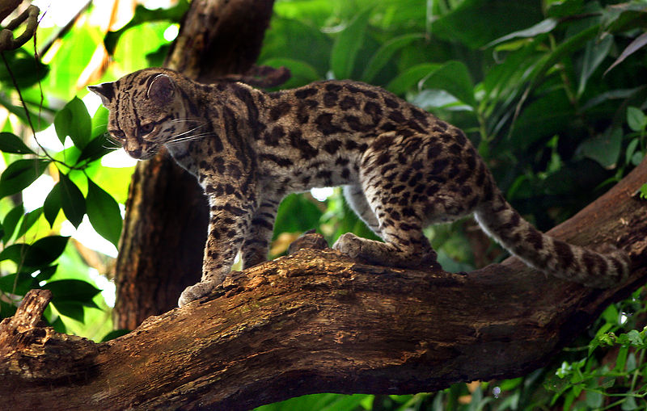

Margay (Leopardus wiedii)) |
|||||||
|---|---|---|---|---|---|---|---|
The margay (Leopardus wiedii) is a small wild cat native to Central and South America. A solitary and nocturnal cat,[3] it lives mainly in primary evergreen and deciduous forest. Until the 1990s, margays were hunted illegally for the wildlife trade, which resulted in a large population decrease. Since 2008, the margay has been listed as Near Threatened on the IUCN Red List because the population is thought to be declining due to loss of habitat following deforestation. The scientific name Felis wiedii was used by Heinrich Rudolf Schinz in 1821 in his first scientific description of the margay, in honour of Prince Maximilian of Wied-Neuwied, who collected specimens in Brazil |
 |
||||||
|
 | ||||||
Facts:
|
|||||||
Source: Wikipedia |
|||||||